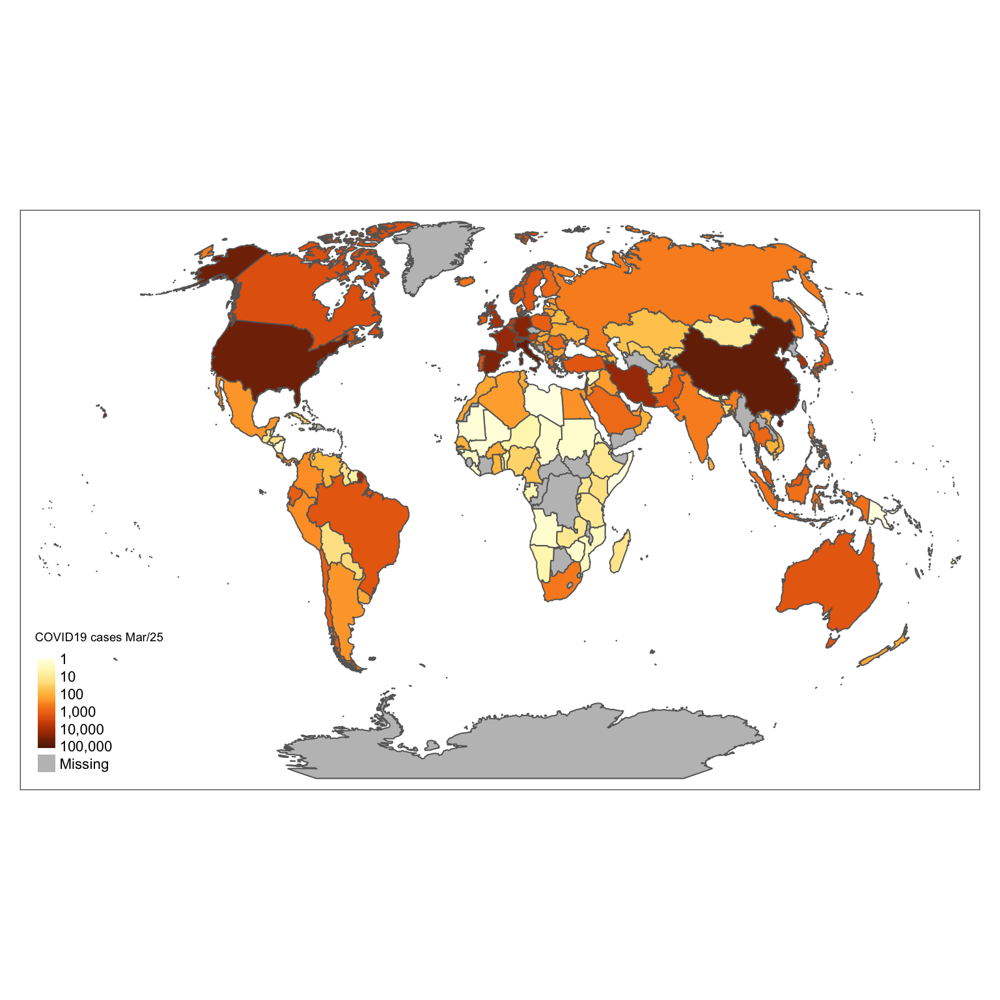
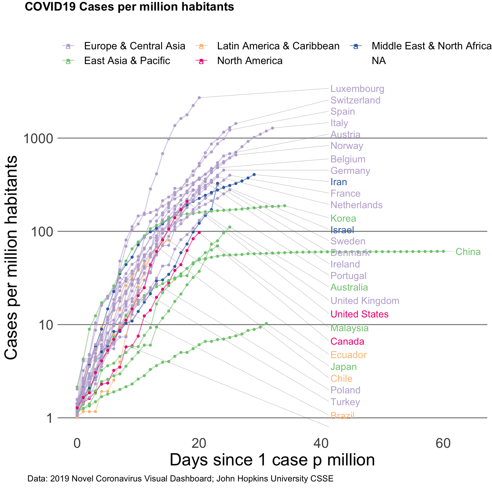
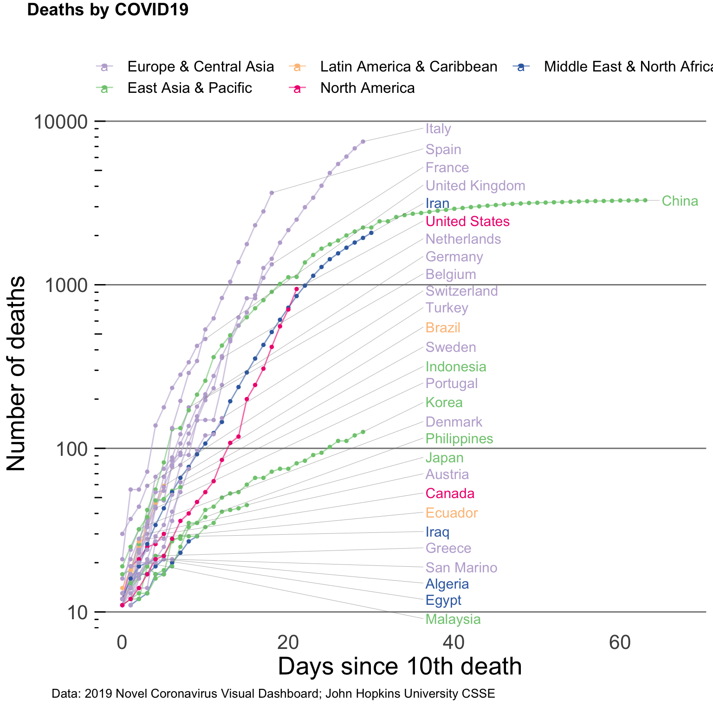
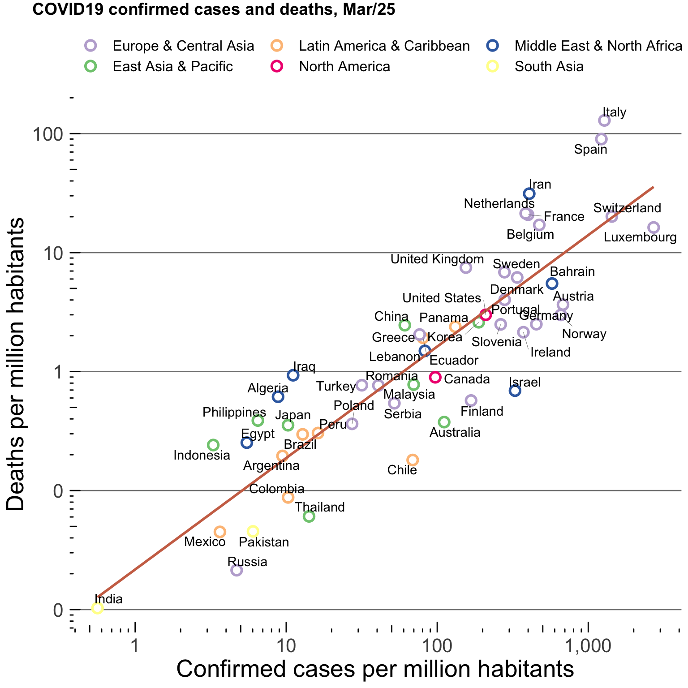
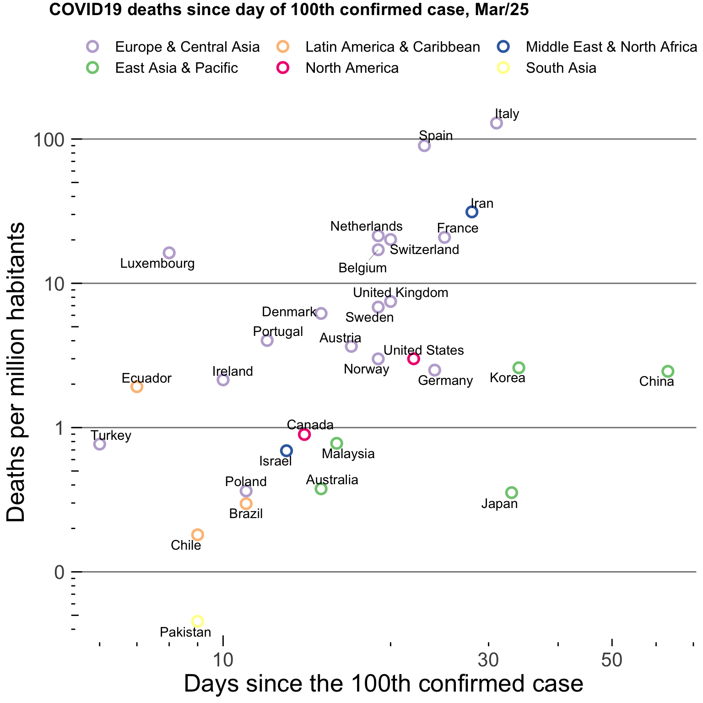

This analysis builds up on the amazing work and ideas by Tomas Pueyo. Pueyo’s used a public dataset compiled by John Hopkins University.
To visualize the dataset as a world heatmap we first summarise each country as their current number of confirmed cases. We can use the library rnaturalearth to retrieve a dataframe with geographic information about all countries plus additional information such as estimated population, GDP, etc.

After filtering for countries with at least 1000 cases, we can plot the data relative to the day when different countries passed the 1 COVID-19 case per million habitants.



